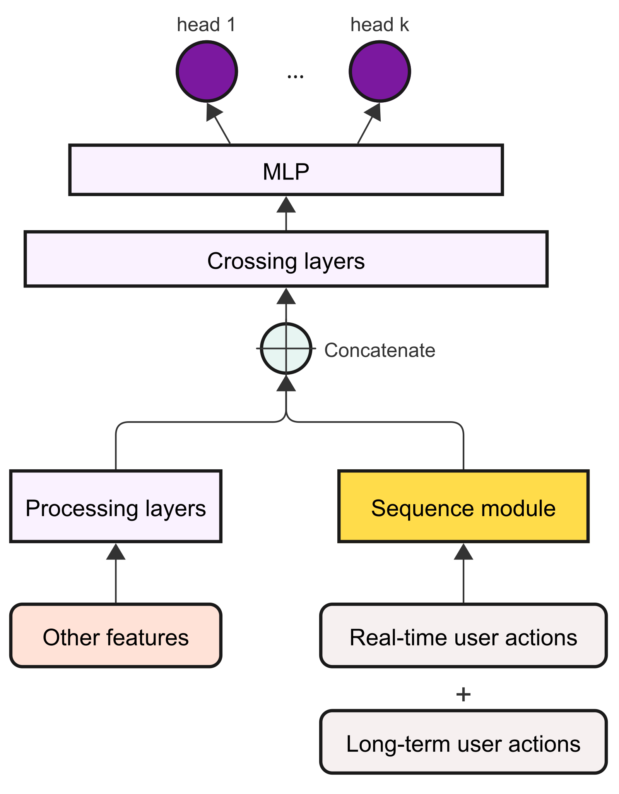
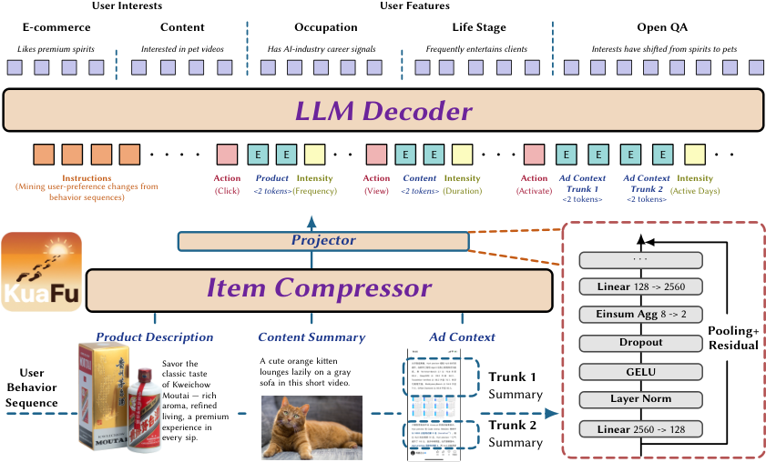
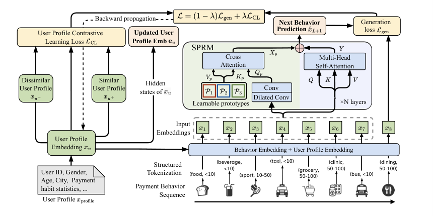

Contents · 11 sections
1What problem is it actually solving?2The big picture first3Step one: compress the long sequence into 16 interest anchors4Step two: two-level probing with the SID5Going online: store "user × SID" offline6Experiments: small but steady gains on industrial data, discount the public data7Ablations: SID beats category, other modules contribute little8Online results9The limitations as I see them10How a recommendation team could try this11One-line conclusion and assessmentSHARE
This is worth reading for recommendation and ads teams that model ultra-long behavior sequences. It finds an engineering-friendly middle point between two established routes: it neither retrieves from the history online for every candidate (the SIM and TWIN route) nor compresses the whole history into a fixed set of candidate-independent vectors (the route of MIMN, a multi-channel user-interest memory network, and C-Former). Instead it groups candidates by their Semantic ID, and candidates in the same group share one user-interest vector computed offline. The core idea in one sentence: use the candidate's first-level SID as the query, run attention once over the user's full history and once over compressed interest anchors, store the result offline keyed by "user × SID", and do a single lookup online. On Kuaishou's industrial data, CTCVR AUC rises from TWIN's 0.8609 to 0.8626, a one-week ads A/B test raises revenue by 0.337%, and online latency grows by only 0.16 ms. I think the "cache by SID group" design is worth borrowing, but some conclusions on the public datasets rest on very few samples, and the storage and cache-coverage details are thin.
What problem is it actually solving?
Start with an illustrative scenario. An active user has accumulated tens of thousands of behaviors (the paper notes active users can interact with tens of thousands of items in a single week), and we now need to rank a running-shoe ad for them.
| Approach | What happens online | Problem (illustrative) |
|---|---|---|
| Retrieval-based (SIM, TWIN) | For each candidate, find the 100 most relevant behaviors among tens of thousands, then run attention | One retrieval per candidate is expensive online; selecting only by category or embedding similarity may miss socks or a sports watch bought together with shoes |
| Compression-based (MIMN, C-Former) | Compress the history offline into a dozen or so fixed vectors and use them directly online | Whether the candidate is running shoes or lipstick, the user representation is the same, so candidate-relevant interests get averaged away |
| UxSID | Look up an offline vector by the candidate's SID | Candidates under the same SID share one representation; the granularity sits between the two |
The paper's example: when the retrieval unit leans toward "trousers", belts or shoes that go with trousers are dropped. The flaw of retrieval is a selection criterion that is too narrow with a limited number of slots; the flaw of compression is independence from the candidate.
An SID is a discrete code obtained by encoding item content into a vector with a multimodal large model and then quantizing it level by level; semantically similar items land on the same code. UxSID only uses the first-level code, which has 4,096 values in the industrial deployment. In other words, all candidates are split into 4,096 groups, and each group shares one user-interest representation. This is exactly what makes offline computation and online lookup possible: computing per candidate item would create too many combinations to store, while grouping by SID means storing one entry per active SID of each user. As I read it, active SIDs are the SIDs that appear in the user's behavior history; the paper says SIDs cluster well, so the count stays small, about 100 per user on average in Kuaishou's deployment.
The big picture first
![Paper Figure 2: the UxSID architecture. Bottom right is the SID generator: item attributes such as text and images are encoded by a multimodal large model and quantized into several levels of discrete codes. On the left is UxSID itself: the IAIC module at the bottom uses a set of learnable interest anchors to cross-attend over the behavior sequence, compressing it into K interest vectors; one path on the left uses the candidate's SID to run target attention directly over the full sequence, producing a global vector; the global vector gates the SID, which then runs target attention over the interest anchors to produce a local vector. The two are concatenated into the UxSID vector and stored in the embedding server under "user ID + SID". Top right is the ranking model: the UxSID vector is concatenated with the short-term sequence, user profile and other features and fed into an MLP for multi-task prediction.](../../../figs/2026-08-03/personalization/2605.09040/fig1_overview.png)
The whole pipeline has four steps:
| Step | Input | Output |
|---|---|---|
| 1. Generate SIDs | Item text, images and other content | A sequence of discrete codes per item; only the first level is used |
| 2. Compress interests (IAIC) | The user's full behavior sequence | K interest-anchor vectors; the paper uses 16 |
| 3. Two-level probing | Candidate SID, full sequence, interest anchors | Global vector + local vector, 32 dimensions each |
| 4. Offline storage, online lookup | User ID and SID | The ranking model receives a 2×32 vector |
The key division of labor: the full sequence provides fine-grained per-behavior relevance, the compressed anchors provide denoising and multi-interest structure, and the SID decides which part of each to take this time. The sections below take this apart.
Step one: compress the long sequence into 16 interest anchors
IAIC (Item-Agnostic Interest Compression) prepares K learnable anchor vectors, uses them as queries, and runs one cross-attention over the whole behavior sequence, so each anchor aggregates a weighted interest vector out of tens of thousands of behaviors. This step is independent of the candidate and plays a role similar to clustering in C-Former.
Why still need a candidate-independent compression? Because most of tens of thousands of behaviors are noise, and running attention directly from the SID over the full sequence is easily diluted by many weakly related behaviors. The anchors first organize the history into a dozen or so "interest directions", and the later local probe chooses among these vectors, with far less noise.
Each anchor is followed by its own small feed-forward network (the paper calls it PFFN, with one set of parameters per anchor), so different anchors transform in their own subspaces instead of being pulled together by shared parameters. An orthogonality loss is added as well:
is the matrix formed by the K anchors and is the identity matrix. The intuition is that anchors should be pairwise orthogonal, each covering one interest. An illustrative hand calculation: if both anchors are (1, 0), pointing in exactly the same direction, the loss is 1; if one is (1, 0) and the other (0, 1), perpendicular to each other, the loss is 0 (here the denominator is read as the spectral norm). The larger the loss, the more the anchors cluster together.
Step two: two-level probing with the SID
The first level is the explicit probe: the candidate's SID embedding is used as the query for target attention over the full behavior sequence, producing the global vector. This step keeps per-behavior relevance, such as a pair of running shoes the user bought three months ago.
The second level is the gated local probe. The global vector passes through a two-layer MLP and a sigmoid to produce a gate vector, which is multiplied element-wise onto the SID embedding to form a new query; that query then runs target attention over the anchors, producing the local vector. An illustrative hand calculation: the SID embedding is [0.8, −0.4, 0.6], the gate is [1.0, 0.1, 0.5], and the new query is [0.8, −0.04, 0.3]. The second dimension is almost switched off and the third is halved. In other words, what the first level saw in the full history decides which dimensions of the SID the second level focuses on.
Why not query the anchors with the raw SID? The same SID means different things for different users. In the same "running shoes" group, one user's history is about long-distance running gear and another's is about fashion sneakers; the gate lets the second-level query carry this user's own context. In the ablation, removing the gate lowers industrial CTCVR AUC from 0.8626 to 0.8623, a small effect but in a consistent direction.

The left panel shows that with the SID as the query, attention really does concentrate on history items of the same group, and it reaches across the whole sequence rather than only recent behaviors. The right panel shows the orthogonality constraint at work: the 16 anchors do not crowd together but fall in different regions of the user's history. Both panels are single-user case studies and only serve as intuitive support.
Finally the two outputs are concatenated into a 2×32 vector and fed, together with candidate features, user profile and short-term sequence, into the ranking MLP. The loss is binary cross-entropy plus the orthogonality loss, and the whole model is trained end to end.
Going online: store "user × SID" offline
After training, a UxSID vector is computed offline for each user and each relevant SID, keyed by "hash of user ID concatenated with SID", and stored in the embedding server. At online ranking time, the key is built from the candidate's SID and the user ID and a single point lookup is made.
Is the storage acceptable? The paper's numbers: about 400 million active users at Kuaishou, about 100 SIDs per user on average, and about 2.56 TB in total. I checked these numbers: 400 million × 100 × 64 values is exactly 2.56 trillion values. So 2.56 TB corresponds to 1 byte per value, equivalent to 8-bit storage; stored as 32-bit floats it would be 4 times this. This is still feasible for a distributed KV store, but readers estimating for themselves should mind the precision.
The cost comparison is the most convincing part of the paper. When training the UxSID model offline, growing the sequence from 1,000 to 10,000 only raises GPUs from 16 to 40. The online ranking model only sees the 2×32 compressed vector, so online resources do not depend on sequence length. For comparison, today's online model with length 1,000 uses about 450 GPUs; the authors estimate that extending the sequence directly to 10,000 inside the ranking model would need about 5,300, meaning online cost would grow more than tenfold. Moving the long-sequence computation offline leaves online serving with one extra lookup per candidate, and latency grows by only 0.16 ms.
Experiments: small but steady gains on industrial data, discount the public data
The public datasets are XLong (sampled from a large e-commerce platform, 1,000 users with 1,000 behaviors each) and KuaiRec-Big (Kuaishou, 7,176 users, average sequence length 1,746). All methods share the same backbone and differ only in the long-sequence module; the metric is AUC.
| Method | XLong AUC | KuaiRec-Big AUC | Industrial CTCVR AUC |
|---|---|---|---|
| DIN (only the latest 100 behaviors) | 0.7889 | 0.8181 | — |
| SIM-Soft (embedding retrieval) | 0.7971 | 0.8279 | 0.8608 |
| TWIN (retrieval aligned with ranking) | 0.8154 | 0.8269 | 0.8609 |
| C-Former (candidate-independent compression) | 0.8135 | 0.8276 | — |
| UxSID | 0.8408 | 0.8348 | 0.8626 |
On industrial data, UxSID beats TWIN by 0.0017. The authors say a 0.1% AUC gain is a significant milestone on this dataset. 0.0017 is about a 0.2% relative gain (0.0017 ÷ 0.8609), or 0.17 percentage points, so it clears that bar either way and can be considered solid. On KuaiRec-Big it beats the strongest baseline by about 0.007, with a standard deviation of only 0.0001 across three random seeds, so the conclusion is reliable.
On XLong it leads TWIN by 0.025, a much larger margin, but it should be discounted. XLong has only 1,000 users, and each user contributes only their last behavior to the test set, so the test set is tiny. UxSID's standard deviation across three seeds on XLong is 0.0023, more than 20 times that on KuaiRec-Big, which shows AUC on this dataset is itself very noisy.
The authors also checked whether the gain comes merely from the extra SID information: adding the first-level SID as a plain feature to every baseline improves all of them slightly (TWIN on XLong goes from 0.8154 to 0.8189), and UxSID still leads. This shows the gain comes mainly from the structure, not just from one extra feature.
Ablations: SID beats category, other modules contribute little
| Variant | Industrial CTCVR AUC | XLong AUC | KuaiRec-Big AUC |
|---|---|---|---|
| Category instead of SID as query | 0.8605 | — | 0.8261 |
| Without global vector | 0.8615 | 0.8370 | 0.8302 |
| Without local vector | 0.8618 | 0.8375 | 0.8314 |
| Without orthogonality loss | 0.8624 | 0.8385 | 0.8344 |
| Without gate | 0.8623 | 0.8376 | 0.8342 |
| Full UxSID | 0.8626 | 0.8408 | 0.8348 |
This table shows three things. First, using the SID as the query is the most important step: switching to coarse categories drops industrial AUC by 0.0021, more than removing any single module. The paper also computes a metric: the share of the 50 highest-attention history items that share the candidate's SID or category. On industrial data this share is 14.88% when querying by SID and only 5.43% when querying by category, showing that SIDs really find same-group history more precisely. Second, both the global and the local paths help, and removing the global one hurts more. Third, the orthogonality loss and the gate each contribute only 0.0002 to 0.0003 on industrial data. On XLong the gaps are between 0.0023 and 0.0038, only 1 to 2 standard deviations, so XLong alone cannot tell whether these two modules are necessary.

The sequence-length figure deserves a close look. On industrial data UxSID already leads the baselines by a wide margin at length 500, and going from 1,000 to 10,000 adds only 0.04 percentage points. This shows that UxSID's gain comes mainly from its structure, and the extra benefit from extending sequences from 1,000 to 10,000 is limited.
Online results
A one-week A/B test on Kuaishou's short-video ads platform: ad exposure +0.111%, advertiser spend +0.231%, revenue +0.337%. Revenue grew three times as much as exposure; the authors explain that conversion prediction got more accurate, so money went to impressions more likely to convert. All three gains are between 0.1% and 0.3%, so within a one-week experiment they can only be read as small improvements pointing the same way.
The limitations as I see them
First, cache coverage and freshness carry risk. Each user stores only about 100 SIDs on average, while the first level has 4,096 SIDs, so when a candidate's SID is not among those 100 there is no UxSID vector to look up, and a fallback needs to be settled before launch. The appendix also says the embedding server is updated on a weekly schedule; if that refers to UxSID vectors, then a user's long-term interest changes over the past week only arrive at the next update, a delay that offline experiments do not have.
Second, the large XLong lead and the ablation conclusions rest on a test set made of the last behavior of each of 1,000 users, with a seed standard deviation of 0.0023, the same order as most ablation gaps. The truly credible results are on industrial data and KuaiRec-Big, where gains are on the order of 0.002 to 0.007.
Third, the granularity is fixed. All candidates under the same first-level SID share one representation; SIDs that are too coarse degenerate into categories, and SIDs that are too fine cannot be stored. The paper's experiments all use first-level SIDs, so how second-level or other granularities perform has to be verified yourself.
How a recommendation team could try this
- First check whether your existing first-level SIDs split candidates into meaningful groups: look at how many SIDs each user's history and candidates fall into on average, which determines storage.
- Build an offline version first: add a path to the ranking model that "runs target attention over the long sequence with the candidate SID", compare AUC against your existing SIM or TWIN, and confirm that SID as the query beats category as the query.
- If that pays off, add anchor compression and the gate, and use multiple seeds to judge whether these two parts are really necessary.
- Before launch, design the cache-miss fallback and update frequency, and in the A/B test look separately at the traffic where the SID misses.
One-line conclusion and assessment
The thing most worth taking away: a user representation for ultra-long sequences need not be computed per candidate, nor be fully candidate-independent; sharing it by SID group allows offline computation and online lookup.
| Dimension | Assessment |
|---|---|
| Problem importance | High. Ultra-long sequences are expensive online and one of the main bottlenecks to scaling ranking models |
| Method novelty | Medium. Each component is an existing attention or compression technique; the novelty is letting the SID set the grouping granularity and the cache key |
| Experimental evidence | Medium. Industrial data and the one-week A/B are solid; XLong has too few samples, and the evidence that the orthogonality loss and gate are necessary is weak |
| Engineering cost | Medium. Needs an SID system, offline batch computation and TB-scale KV storage, but online it adds only one lookup |
| Worth trying? | Yes, especially for teams that already have SIDs; start with an offline comparison of SID as the query |
| Where it fits | Ads or content ranking with very long user behavior, tight online compute, and items that already have Semantic IDs |
How did this read for you?
Hoot made a note. Thanks for the feedback.
One tap, no sign-in; tap again to undo. Only anonymous counts are kept, never who you are.
Related papersMore from Paper Daily

Personalization · 2026-11-11Query- and Candidate-Aware Long User Sequence Modeling for Sponsored Product Ranking in SearchWhen sponsored search ranking uses long-term behavior, the usual approach searches history for actions similar to the candidate product, yet the current query also indicates which history matters. Beyond recent behavior, Wayfair retrieves one batch of long-term actions by candidate and another by query, then feeds them to a Transformer with two context tokens for the query and the candidate. Offl… Personalization · 2026-10-22ECHO: Efficient Cascade with Homogeneous Operators for Distillation-Guided 100K-Sequence ModelingECHO makes 100K-event histories affordable by retaining reusable original records before candidate-aware retrieval. A full-history teacher supervises selection, while retrieval and aggregation share relevance parameters. Kuaishou reports a 0.613% increase in app usage time in an online test.
Personalization · 2026-10-22ECHO: Efficient Cascade with Homogeneous Operators for Distillation-Guided 100K-Sequence ModelingECHO makes 100K-event histories affordable by retaining reusable original records before candidate-aware retrieval. A full-history teacher supervises selection, while retrieval and aggregation share relevance parameters. Kuaishou reports a 0.613% increase in app usage time in an online test. Personalization · 2026-11-02Read More, Reason Deeper: Latent Workspaces for Long-Sequence RecommendationThis Meta paper gives long-sequence ranking a new structure in which reading more history and stacking more layers become two separately tunable knobs: with 10K history events, its NE beats HSTU by 0.19% while using 69.6% less forward compute. Current models tie the two together. A sequence encoder pays for every extra event in every layer, while models that first select relevant events select on…
Personalization · 2026-11-02Read More, Reason Deeper: Latent Workspaces for Long-Sequence RecommendationThis Meta paper gives long-sequence ranking a new structure in which reading more history and stacking more layers become two separately tunable knobs: with 10K history events, its NE beats HSTU by 0.19% while using 69.6% less forward compute. Current models tie the two together. A sequence encoder pays for every extra event in every layer, while models that first select relevant events select on…
Personalization · 2026-10-22KuaFu: Compressing Long User Behavior into Understanding at Billion ScaleKuaFu avoids repeatedly encoding the same content across users and profiling tasks. It caches compact item representations, assembles them chronologically and uses staged training to preserve evidence. Tencent reports a 1.37% overall GMV increase against a long-term holdout. Personalization · 2026-09-30HELIX: Purified and Unified - Rethinking Feature Interaction and Sequence Modeling for Large-Scale RecommendationDeep dive: HELIX: Purified and Unified - Rethinking Feature Interaction and Sequence Modeling for Large-Scale Recommendation.
Personalization · 2026-09-30HELIX: Purified and Unified - Rethinking Feature Interaction and Sequence Modeling for Large-Scale RecommendationDeep dive: HELIX: Purified and Unified - Rethinking Feature Interaction and Sequence Modeling for Large-Scale Recommendation. Personalization · 2026-08-19UniDot: A Unified Network for Sequence Modeling and Feature Interaction in Large-scale RecommendationDeep dive: UniDot: A Unified Network for Sequence Modeling and Feature Interaction in Large-scale Recommendation.
Personalization · 2026-08-19UniDot: A Unified Network for Sequence Modeling and Feature Interaction in Large-scale RecommendationDeep dive: UniDot: A Unified Network for Sequence Modeling and Feature Interaction in Large-scale Recommendation. Personalization · 2026-10-20LSNR: Learned Sparse News Recommendations with Attentive User ModelingEncode articles separately, then learn which ones matter. LSNR combines weighted sparse article vectors with a user-level semantic expansion, improving MIND NDCG@10 by about 11% over STAR.
Personalization · 2026-10-20LSNR: Learned Sparse News Recommendations with Attentive User ModelingEncode articles separately, then learn which ones matter. LSNR combines weighted sparse article vectors with a user-level semantic expansion, improving MIND NDCG@10 by about 11% over STAR.
Personalization · 2026-04-01PANTHER: Generative Pretraining Beyond Language for Sequential User Behavior ModelingDeep dive: PANTHER: Generative Pretraining Beyond Language for Sequential User Behavior Modeling.
Discussion
Add experiment details, reproduction notes or a different take. Requires a GitHub sign-in.
Loading the discussion…